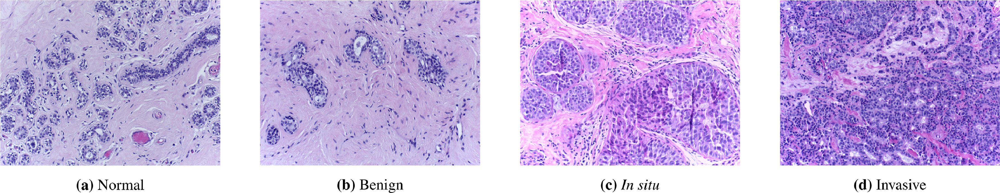
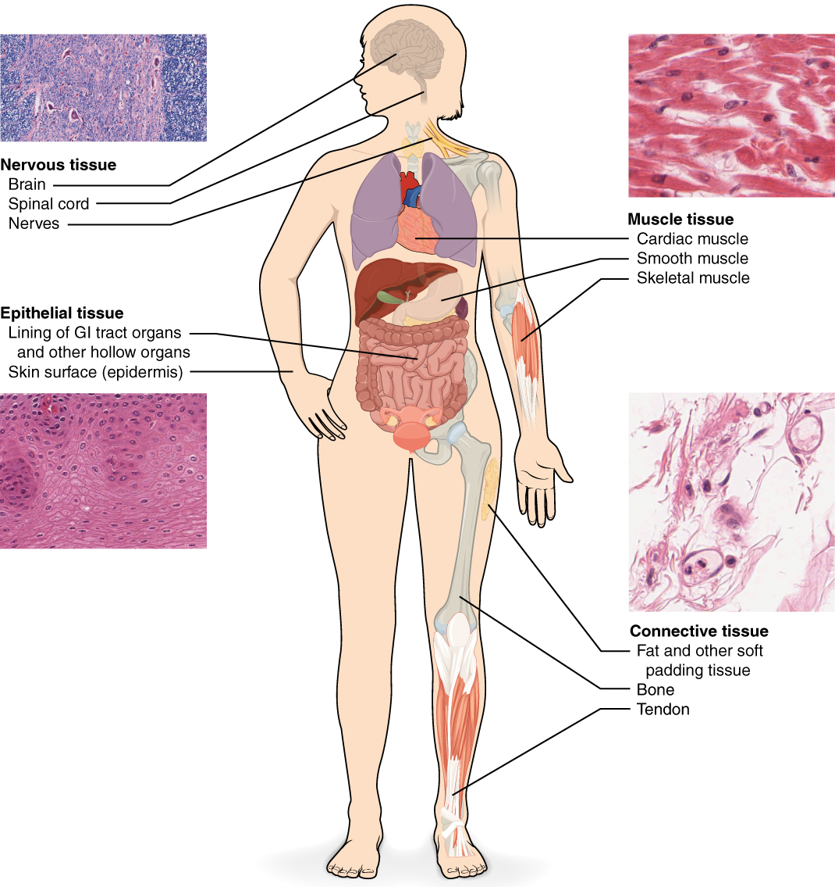
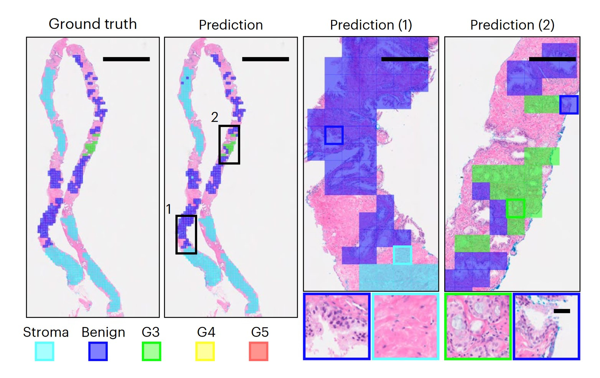
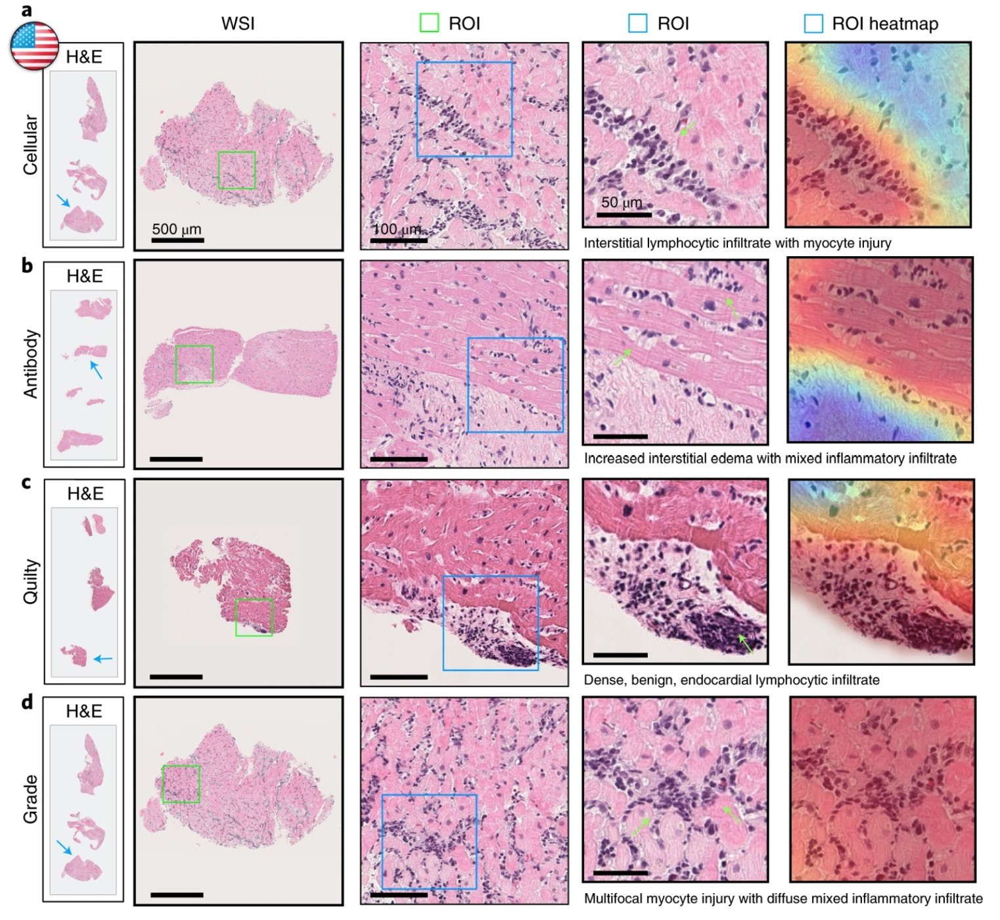
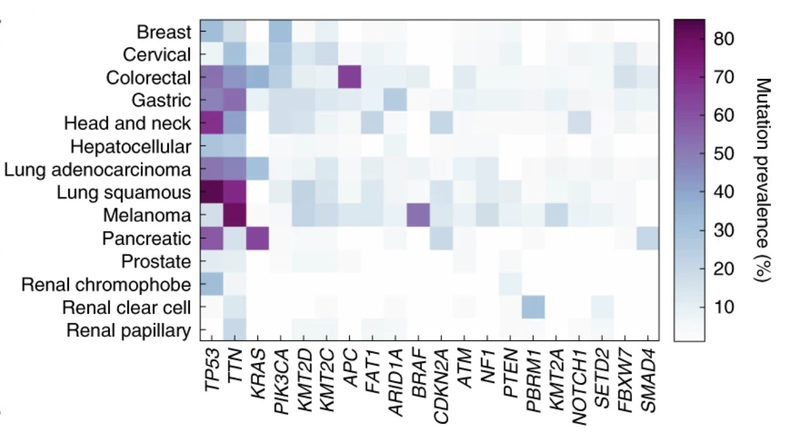
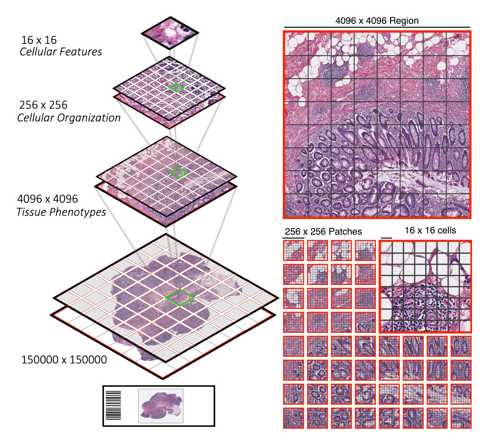
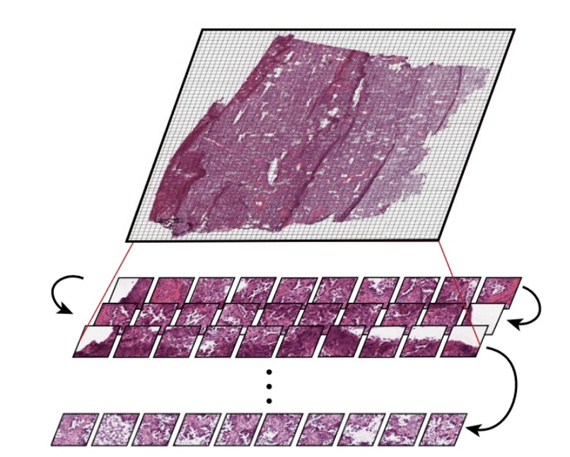

This article was originally posted on rachel.fast.ai, where Rachel has been writing about her journey as an AI researcher returning to school for immunology.
The lavender images below show breast tissue. There are many questions doctors could want to answer using these images: They could want to know whether there are tumors present or not. If there is a tumor, doctors would want to classify its stage, make predictions about how likely the patient is to respond to treatment, and to detect whether the tumor has spread from another organ.
All of these are questions which people are now tackling with machine learning. They fall within the area of computational pathology, often abbreviated CPath. In the past year, two CPath AI models were released which achieved state-of-the-art results. Here I will discuss an introduction to this field, what these models do, and what some key challenges are going forward.

CPath foundation models
There is a powerful idea about how to make more accurate CPath models. Rather than train a model on a single type of tissue and a single task (e.g. identifying cancer in breast tissue), train a model on images of tissue from many different organs (breasts, lymph nodes, lungs, prostate, heart,…) and on multiple different tasks (recognizing cancer, determining the stage and subtype of the cancer, segmenting cells, and predicting treatment outcomes). Patterns learned from one dataset or one task are likely to generalize to others.
Such models are known as CPath foundation models. In general, a foundation model is a machine learning model which is trained on a sufficiently diverse large dataset which can then be adapted for a range of downstream tasks. This idea is commonly used in the area of language models such as Chat-GPT and Claude.ai. Language foundation models are trained on many types of language tasks and intended to generalize across different corpuses of text (e.g. wikipedia, reddit posts, academic papers, online conversations, news articles, and more). ImageNet models trained to recognize a huge variety of different pictures often serve as foundation models for images. The success of foundation models within the areas of language and more general images is a key reason why we might expect pathology foundation models to be useful too.

Two notable CPath foundation models were released in 2024: Prov-GigaPath and UNI. Both models achieved state-of-the-art performance on dozens of pathology tasks (although they were not directly compared to one another). Another relevant paper (from Kaiko.ai) studied the impact of dataset size and model size on CPath model performance.
Learning the Vocab
Medicine is full of jargon and specialized vocabulary. Pathology refers to the study of disease. It is a broad field, and can include everything from dissecting dead bodies to analyzing blood samples. One key focus of computational pathology is analyzing and interpreting whole slide images (WSIs) and in some cases combined with accompanying meta-data about a patient. Whole slide images refers to the complete microscope slide, although in many cases the region of interest (such as particular cancerous or inflamed cells) may be much smaller, just occupying a subset of the slide.
Machine learning (ML) is a subfield of Artificial intelligence (AI) which involves learning from past data, and is increasingly being used with great success in pathology. The focus of most computational pathology ML models is on images of tissue, on microscope slides. That is what we will focus on in this post as well.
So Many Tasks!
There are many different benchmarks that CPath models can be tested on. These involve numerous datasets: related to different areas of the body, with different sizes, and with different purposes. They also involve a variety of tasks, including binary classification, image segmentation, and outcome prediction. Prov-GigaPath attained state-of-the-art performance on 25 out of the 26 tasks it was evaluated on and UNI attained state-of-the-art performance on 34 different tasks. Here I will give examples of just 3 of these tasks.
Task: prostate cancer cell grading
In the 1960s, the pathologist Dr. Donald Gleason came up with a grading scale for rating cells as they progressed from normal to prostate cancer. The Gleason Grading system is still widely used and is considered a powerful predictor of how prostate cancer patients will fare. A major medical image conference (MICCAI) held a competition in 2022 for researchers to create algorithms to determine the Gleason grades when given images of prostate tissue.

The prostate tissue is shown in pink, and segments have been colored in blocks based on where they fall on the Gleason scale.
Task: identifying early signs of rejection after a heart transplant
Rejection is the main cause of mortality in patients who have received a heart transplant. Since the early stages of rejection can be asymptomatic, it is standard for patients to receive frequent biopsies for 1-2 years following a transplant. These are known as endomyocardial biopsies (EMB), since they remove a small sample of tissue from the inner lining (endo) of the heart (cardial) muscle (myo). Accurately interpreting the results of these biopsies is a key question. Underestimating the chance of rejection could lead to dangerous delays in treatment, but overestimating could lead to alarm and unnecessary follow-ups or treatment. Assessment of the sampled tissue by experienced pathologists has higher variability than many other tasks, such as cancer diagnosis. Deep learning is being used to tackle this task, in models such as Cardiac Rejection Assessment Neural Estimator (CRANE) and the CPath foundation model UNI.

Task: Genetic Mutations in Cancer
For several common genetic mutations in tumors, there are specific drugs known to target those mutations. This has a direct application for clinical treatment. Since genetic mutations can change the form and function of cells, it is reasonable to expect that this information could be deduced from images of the cancer cells. Deep learning models have been built to identify genetic mutations from tissue slides. The benefits of using a computational approach are that it can be scaled as an increasing number of relevant genetic mutations and molecular biomarkers are being discovered. Task-specific models have been built for this, and this is one of the tasks that foundation models can be tested on.

We need more data
One key challenge in the area of CPath foundation models is gathering enough training data. The Cancer Genome Atlas (TCGA) was an ambitious project launched in 2006 by the National Cancer Institute in the USA. Over a 12 year period, samples were collected from over 11,000 patients of 33 different cancer types, and all this data was made publicly available. While this is a rich dataset and a useful resource, all 3 papers we’ve looked at concluded that TCGA is not large enough for effective foundation models. In addition to limited data size, TCGA also has limited diversity, consisting mostly of slides from the primary site of cancer, but not metastasized cancers or different types of tissues.
Researchers at Kaiko.ai tested the impact of scaling both the size of their model and the size of the training dataset. While they found limited need to scale model size beyond a certain point, they found that larger datasets continued to lead to increased performance. They concluded that TCGA was likely not large enough and shared their plans to build a larger training set, and are now partnering with cancer centers across Europe to create a dataset for their model.
The researchers behind two other CPath foundation models reached the same conclusion about data set size, and gathered massive datasets to train their models. This required partnering with healthcare centers. Prov-GigaPath, a model created by Microsoft Research and Providence Genomics involved data from 30,000 patients across 28 cancer centers (which are part of Providence Healthcare company). UNI, a cPath model created by a team at Harvard, MIT, and the Broad Institute, involved the creation of the Mass-100K: a dataset with over 100K whole slide images across 20 tissue types collected from Mass General Hospital, Brigham & Women’s Hospital, and Genotype-Tissue Expression (GTEx) consortium.
These partnerships and curation of training datasets are currently a crucial component of building CPath foundation models. Curating datasets carefully poses many challenges as well. Combining data from different sources, which often use different protocols for how slides are sampled and prepared, can introduce significant biases.
Different scales
CPath foundation models face the difficulty of capturing both local patterns (that show up in a small tile within a slide) and global patterns across the whole slide. Many tiny tiles are found within a slide.
Some models, such as the Hierarchical Image Pyramid Transformer (from several of the same authors as UNI), use hierarchical approaches to deal with these multiple scales.

Other models, such as Prov-GigaPath, treat the tiles as tokens, encoding both the tiles and the slide as a whole as model inputs. Prov-GigaPath uses both a slide encoder and a tile encoder to take into account these two different scales.

In pathology clinics, diagnosis and treatment decisions are often made at the patient level, whereas CPath models are often highly focused on regions of interest. Accommodating the multiple relevant scales (small tiles, whole slides, and patient-level) for pathology is a consideration that CPath models need to balance.
Going Forward
It is still early in the world of CPath and there are many growth opportunities, including the continued need for large and diverse datasets, ways to further optimize model training, tasks which have previously received less focus, and the difficulties of integrating models into clinical work. As the authors of the kaiko.ai paper wrote, “We are still at the very beginning of developing a truly foundational pathology foundation model.” It is a hopeful sign that these models achieve state-of-the-art results on dozens of benchmarks, but it still remains to be seen when and how they will be used in clinical settings.
I look forward to reading your responses. Create a free GitHub account to comment below.